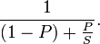
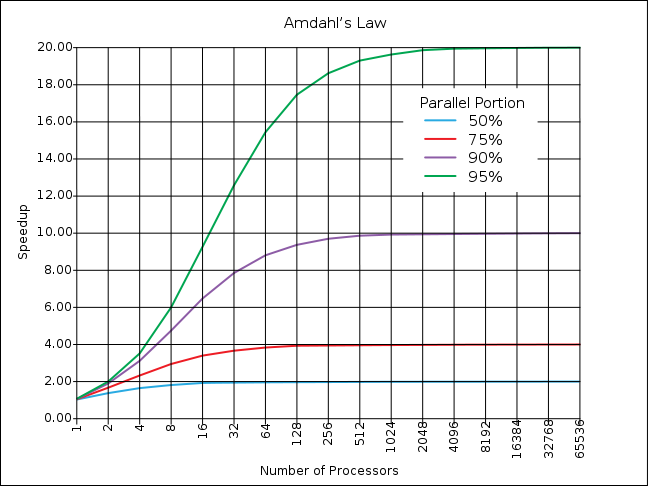

El problema de paralelizar
¿Cómo aumentar el desempeño de nuestros sistemas?
La respuesta a esta pregunta pasa por definir primero cómo medimos el desempeño de nuestros sistemas. Ya hemos visto que una mala definición de la medida de desempeño nos puede llevar a profundos errores de juicio (¿recuerdan el problema con los kilómetros por litro de bencina?).
Algo parecido pasa con el aumento de desempeño de nuestros sistemas de cómputo, debido a la disponibilidad de procesadores multicore. Desde hace un tiempo se nos viene diciendo que el truco para mejorar el desempeño de nuestros sistemas consiste en aumentar la cantidad de procesadores, y adoptar el paralelismo en el diseño del software que construimos.
Si tenemos un problema que podemos paralelizar ¿cuanto mejora el desempeño del mismo al agregar más procesadores? En otras palabras, si un problema lo resolvíamos con 1 CPU en un tiempo T, entonces al tener una CPU dualcore ¿deberíamos resolverlo en T/2?

Gene Amdahl
Sabemos que no es así. Todos los que tenemos acceso a computadores multicore hemos notado que las cosas no mejoran tanto en realidad.
Claro, mucho de nuestro software aún opera en forma secuencial. Pero ¿cuanto se gana en general en un proceso si aumentamos la cantidad de cores? ¿Hay algún límite a nuestra capacidad de paralelizar, o el procesamiento paralelo promete un promisorio futuro de progreso permanente en nuestras capacidades de cómputo?
La respuesta les va a sorprender, y fue deducida por Gene Amdahl en 1967.
La Ley de Amhdal
En 1967 Amdahl propuso la siguiente observación: “la mejora obtenida en el rendimiento de un sistema debido a la alteración de uno de sus componentes está limitada por la fracción de tiempo que se utiliza dicho componente”.
En términos simples: “es el algoritmo el que decide la mejora de velocidad, no el número de procesadores”1.
Si del tiempo total de un sistema una proporción P del mismo se puede paralelizar, y esta parte se puede acelerar en un factor S, entonces la mejora total obtenida sera: 1 / ((1-P)+P/S) 2.

Es fácil ver que si S tiende a infinito, la mejora tiende a 1/(1-P).
Por ejemplo, supongamos que tenemos un problema y que un 30% del algoritmo puede ser paralelizado, mientras el 70% restante sigue siendo secuencial, la ley de Amhdal dice que al paralelizar al máximo el programa la nueva versión será 1/(1 -0.30) = 1.4285 veces más rápida que la versión no paralelizada.
La ley de Amhdal sigue un patrón de rendimientos decrecientes, si graficamos esta ley obtenemos lo siguiente:

Hay que hacer notar que esta ley sólo considera el efecto de agregar más procesadores, si además agregamos el acceso al bus de datos, la sincronización y otros factores, el efecto es mayor.
La falsa esperanza de la Ley de Moore
Por años muchos desarrolladores de software han descansado en la reconfortante promesa de la Ley de Moore, que dice que aproximadamente cada 18 meses se duplica el número de transistores en un circuito integrado.
Una esperanza expresada en la forma de un mito, de acuerdo a Alan Kay3: “El mito de que no importa cual sea tu arquitectura de proceso, la Ley de Moore se encargará de todo”.
Si los procesadores aumentan su capacidad cada 18 meses, entonces la velocidad de los mismos se duplica también, ¿no es cierto?
Pero la velocidad de los procesadores depende de la frecuencia del reloj interno que estos usan. El problema que al aumentar la velocidad del reloj aparecen problemas técnicos complejos (a mayor velocidad aumenta la disipación de calor, y se pierde la sincronía de los datos). Para solventar estos problemas los diseñadores de microprocesadores han decidido adoptar otras estrategias. El desarrollo de los procesadores multi core es una consecuencia de estas limitaciones técnicas.
La idea es que se puede obtener un mejor desempeño paralelizando tareas, sin tener que aumentar la velocidad del reloj del procesador. Con esto los desarrolladores de procesadores pueden seguir aprovechando la Ley de Moore, construyendo cada 18 meses procesadores con mayor capacidad de procesamiento.
El problema es que antes los desarrolladores de software aprovechábamos la mayor velocidad de los procesadores para compensar los problemas de desempeño de nuestros algoritmos o diseños.
Con frecuencias de reloj que se mantienen casi iguales durante el tiempo, ya no podemos esperar ayuda de la Ley de Moore, la esperanza se derrumba.
La propuesta que viene desde el hardware es simple: paralelizar.
¡Cómo si fuera tan sencillo!
La Ley de Amhdal nos dice que no importa la cantidad de procesadores (o cores) con que dispongamos, la ganancia está limitada por aquella parte del algoritmo que no se puede paralelizar.
Esto nos da otra perspectiva sobre la supuesta crisis del multicore
Ahora disponemos de más procesadores, pero como hemos visto, contar con más núcleos en nuestros procesadores tiene un límite.
Se está investigando profusamente sobre cómo usar los multicore que nos entregan estos procesadores nuevos, hay detrás de esto motivaciones económicas, de negocio. Compañías como Intel están financiando programas de investigación que permitan aprovechar las nuevas capacidad de paralelización con que contamos.
Pero como hemos visto, las verdaderas ganancias están por otro lado: crear mejores algoritmos.
El desafío, como siempre, está en el lado del software, no del hardware.
Este tema se sigue discutiendo en: